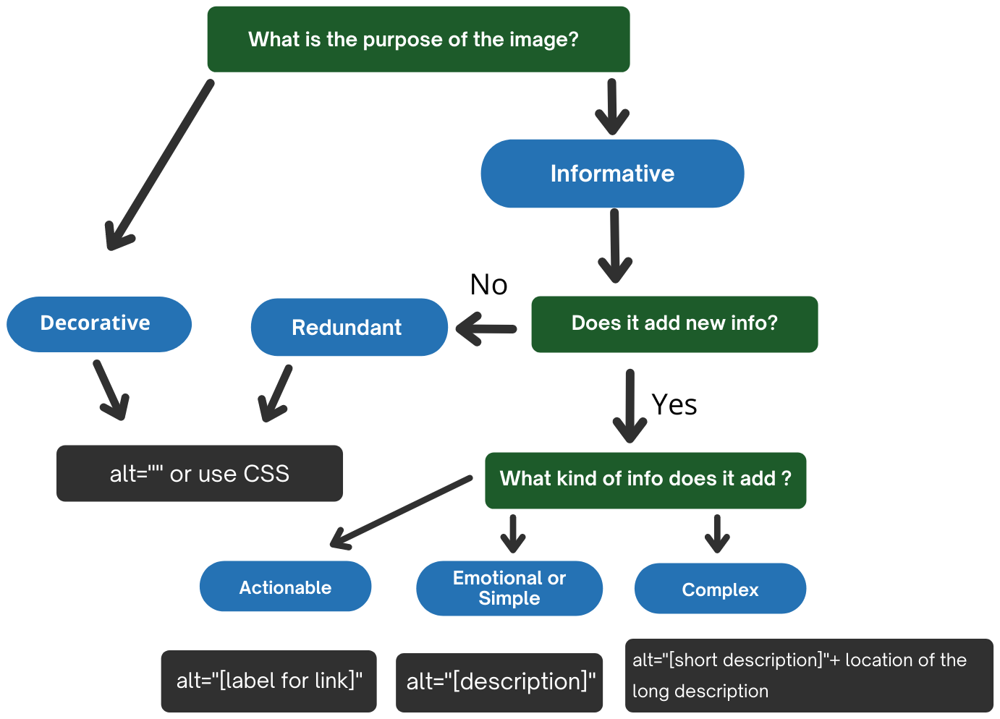

This decision tree describes how to use the alt attribute of the <img> element in different situations. The decision tree does not cover all cases. For example, it does not cover MathML, groups of images, image maps and other alt text approaches for functional and complex images (e.g. aria-label, aria-labelledby, figcaption, etc). For detailed information on the provision of text alternatives, refer to the sections above.

alt="" or use CSSalt="" or use CSSalt="[label for link]"alt="[description]"alt="[short description]" + location of the long description